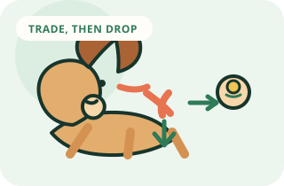

Release an item
Teach Drop It with a fair trade
Build a calm release cue by trading for something the dog values more, then returning play sometimes.
Goal
What success looks like
Your dog releases a safe low-value item from their mouth after one Drop It cue.
Visual method
See the sequence before you practice
The item should leave the mouth before the reward is delivered. Start with a safe, low-value toy and a fair trade.

Complete method
One session, start to finish
- 01
Set up
Start with a safe toy your dog enjoys but does not guard.
- 02
Warm up
Repeat one skill your dog already knows for 30 to 60 seconds.
- 03
Teach
Let your dog hold a low-value toy. Hold a high-value treat near the nose and wait for the mouth to open. Mark, then reward the release.
- 04
Reward
Mark the exact behavior, then deliver the reward within one second.
- 05
Repeat
Do three to five easy repetitions. If two cues are missed, make the task easier.
- 06
Advance
Your dog releases a safe low-value item after one cue in eight of ten repetitions and accepts the trade without snapping or rushing.
- 07
Finish
Use your release cue, reward one easy win, and end while your dog is still engaged.
Before you begin
Set up for an easy win
- Start with a safe toy your dog enjoys but does not guard.
- Prepare a higher-value food reward and keep it out of sight at first.
- Use a second toy for playing tug if your dog enjoys it.
- Never practice with a dangerous or strongly guarded object.
Step by step
How to teach it
- 01
Start with an easy trade
Let your dog hold a low-value toy. Hold a high-value treat near the nose and wait for the mouth to open. Mark, then reward the release.
- 02
Name the moment
Once the release happens easily, say “Drop it” once just before presenting the treat. Keep the cue quiet and use it only once.
- 03
Reward after the item is released
Deliver the treat after the toy leaves the mouth. Then pick up the toy and decide whether to return it or end the game.
- 04
Return the toy sometimes
Give the toy back after some successful trades. This teaches the dog that Drop It is not always the end of something valuable.
- 05
Practice with different safe toys
Repeat with a ball, rope, or chew that your dog can safely release. Change one item at a time and keep the reward valuable.
- 06
Use management for dangerous items
For unsafe objects, do not create a chase or tug-of-war. Use a barrier or ask for help from a qualified professional if the dog guards or swallows objects.
Success checkpoint
You are ready to add difficulty when…
Your dog releases a safe low-value item after one cue in eight of ten repetitions and accepts the trade without snapping or rushing.
When progress stalls
Common problems and fixes
My dog runs away with the item.
Practice in a small, safe space with a low-value toy and a high-value reward. Do not chase; make coming near you the easiest part of the game.
My dog will not trade for food.
Use a different reward such as a favorite toy, a short walk, or a chance to resume play. Try again when the dog is not overtired.
My dog guards toys or chews.
Stop trading exercises and seek a qualified force-free behavior professional. Keep people, other pets, and the guarded item safe.
Trainer note
Drop It should predict something good, not the permanent loss of a prized item. Fair trades build cooperation.